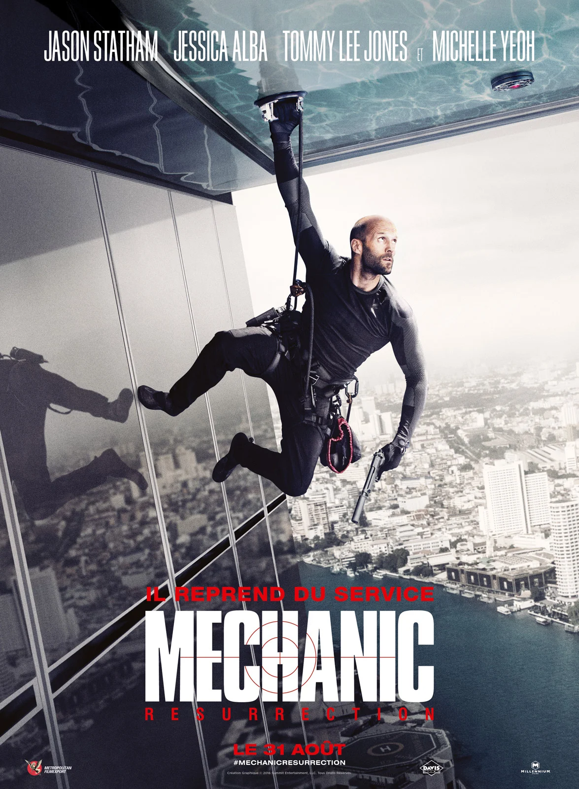

Les Premiers Pas (1998-2004)
Lock, Stock and Two Smoking Barrels (1998): Le début explosif dans le monde du cinéma, dirigé par
le visionnaire Guy Ritchie.
Snatch (2000): Un autre bijou cinématographique de Ritchie, montrant le talent brut de Statham.
Transporter (2002):La percée qui a établi Statham comme un acteur d'action incontournable.
The Italian Job (2003):Une incursion réussie dans le monde des braquages et de l'intrigue.
Cellular (2004): Une démonstration de la polyvalence de Statham dans un thriller captivant.
L'Apogée de l'Action (2006-2010)
Crank (2006): Une montée d'adrénaline constante dans le monde de l'action effrénée.
Death Race (2008): Statham prend le volant dans ce thriller de course mortelle.
The Expendables (2010):Rejoignant une équipe d'icônes de l'action, Statham livre des performances inoubliables.
Élargir l'éventail (2015-2019)
Fast & Furious 7 (2015): Intégrant la saga à succès avec une présence magnétique.
Spy (2015): Dévoilant son côté comique dans une comédie d'espionnage inattendue.
Mechanic: Resurrection (2016): Revisitant son rôle emblématique avec panache.
The Meg (En eaux troubles - 2018):Affrontant un mégalodon dans ce film de science-fiction captivant.
Fast & Furious: Hobbs & Shaw (2019): Un spin-off explosif démontrant la versatilité de Statham.
- 

Projets Récents (2021 et au-delà)
Cash Truck (Un Homme en colère - 2021): Collaborant à nouveau avec Guy Ritchie dans un thriller haletant.
The Meg 2 (En eaux très troubles - 2023):Affrontant des mégalodons dans ce film de science-fiction captivant. La suite avec Jonas Taylor